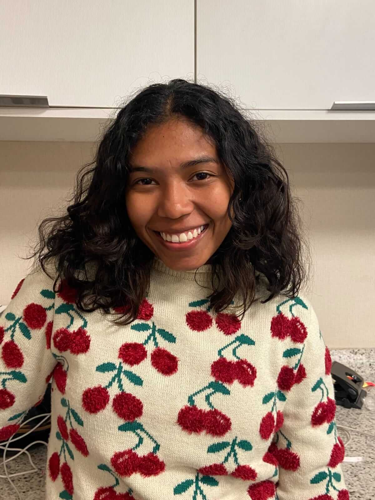
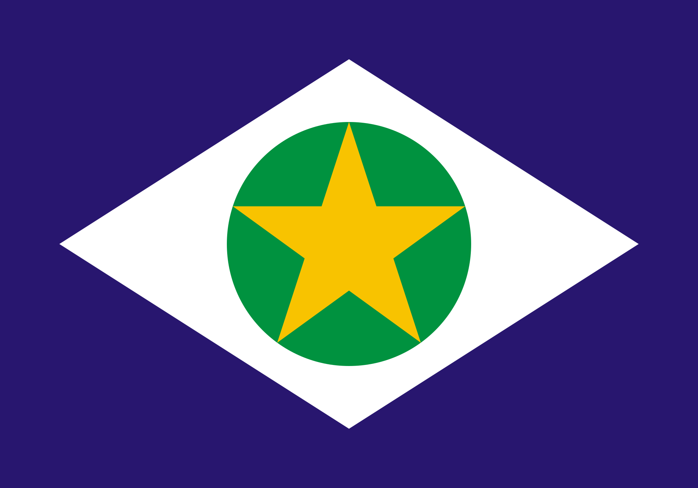

About me
My name is Bruna, I'm Brazilian and I live in a state called Mato Grosso. I currently work in a bilingual nursery school as a classroom assistant, I'm a Software Development student at BYU Idaho. I love spending time with my family and friends. In my free time I like to read books and sleep with my kittens.
Mato Grosso, Brazil
Mato Grosso is a state located in the centre-west of Brazil. The largest producer of soya, corn and cotton, Mato Grosso was the state with the highest agricultural production value. Its beauty in the form of crystal-clear rivers attracts the attention of tourists. Around 70 per cent of the state is made up of vegetation with the Amazon Forest, Cerrado and Pantanal biomes. Cuiabá is the state's capital and largest city.